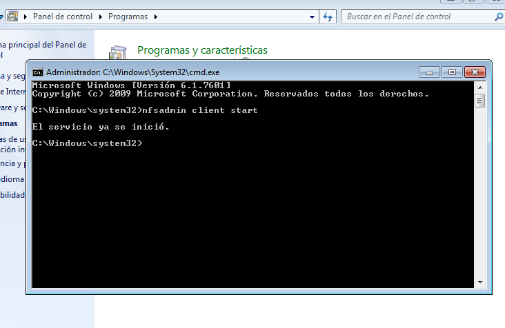

- Módulo: Administración de Sistemas Operativos
- Título del trabajo NFS
- Componentes del grupo: Silvano Pérez Yanes
- Curso Académico: 2º ASIR
- Fecha de entrega: 9 de Marzo de 2015
En esta actividad, vamos a crear archivos de sistemas vía red, para la cual necesitaremos dos máquinas virtuales un servidor NFS y un cliente NFS.
Nada más empezar, comenzamos las instalaciones de los servicios del servidor y del cliente

Una vez hecho estos pasos, comprobamos si funciona el servicio
Creamos las carpetas, private y public, en el servidor NFS, y la compartimos, con la opción avanzada de compartir por NFS, para las dos carpetas. La carpeta public tendrá permisos de escritura y lectura y el private solo de lectura.
Ahora empezamos ha montar las carpetas en el cliente en unidades del sistema

Una vez comprobado que las carpetas están compartidas en el cliente, podemos proceder a desmontarlas.

En Linux al igual que en windows tendremos que instalar los servicios de NFS
Luego creamos los archivos que vamos a compartir por NFS, y le cambiamos los permisos.


Con este comando, podemos comprobar que carpetas podemos montar en el cliente.
A continuación, montamos los archivos NFS en el cliente, los cuales se depositarán en los ficheros /mnt/remoto.(El montaje de los archivos no se podian hacer a la vez, se deben hacer por separado, en OpenSuse, ya que no monta más de un archivo.)
Para finalizar, podemos configurar un archivo del sistema en Linux, para que los archivos se monten automaticamente, nada más se arranque la máquina.